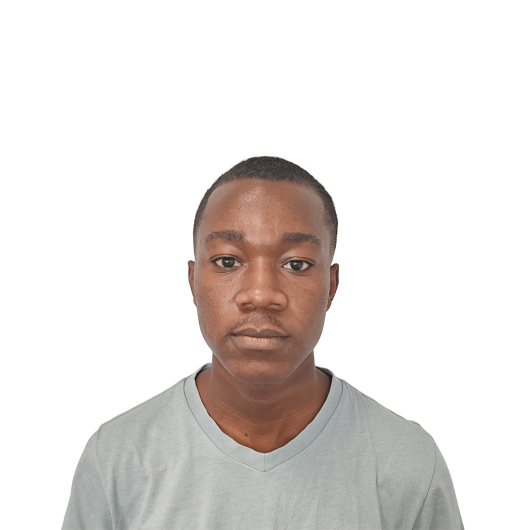

Sylvestre Ibara
Électronique & Systèmes embarqués
Actuellement étudiant en BUT GEII, je suis passionné par les systèmes embarqués, l'Internet des Objets (IoT) et le développement logiciel. J'enrichis continuellement mes compétences à travers des stages et des projets concrets, avec l'ambition de concevoir des systèmes complexes et innovants.
🚀 Recherche d'alternance — Rentrée 2026
Arrivant à la fin de mon BUT, je postule actuellement en école d'ingénieurs (filière électronique et systèmes embarqués). Je suis activement à la recherche d'une entreprise pour m'accueillir en contrat d'apprentissage.
Formations
Expériences Professionnelles
Carte de contrôle de feu (CFE)
Cerema · Plouzané
Développement d'un firmware basse consommation pour le pilotage de feux maritimes autonomes.
FrostAlert (IoT)
UBO · Brest
Mise en place d'un système de surveillance IoT pour les surgélateurs de laboratoire.
Transpondeur AIS
Cerema · Plouzané
Configuration dynamique via ESP32 pour la surveillance des aides à la navigation maritimes.
Projets
Compétences & Outils
Contact
Vous souhaitez échanger sur mon profil, une alternance ou un projet ? Je suis à votre écoute :